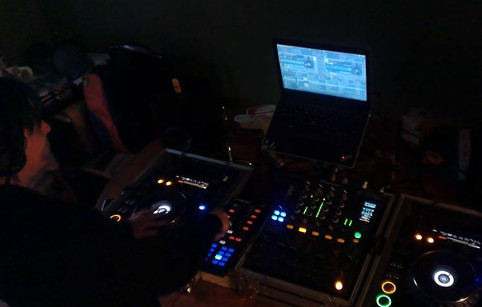
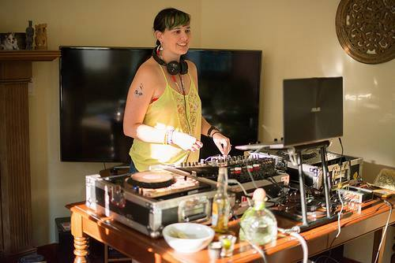
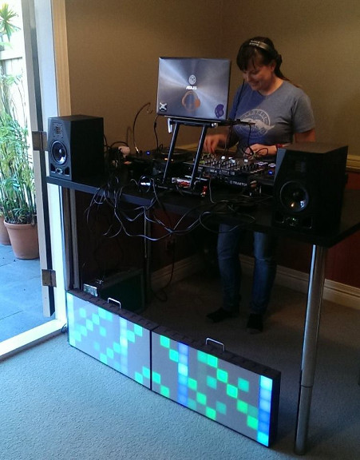
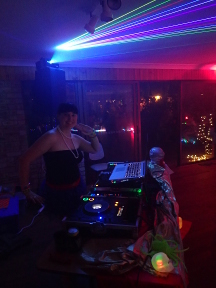
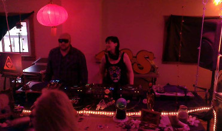

What is DJing?
- Disc Jockey
-
- A disc jockey (abbreviated D.J., DJ or deejay) is a person who mixes recorded music for an audience.
Important Points
- DJing involves playing recorded music.
- Mixing means that the music is continuous with little to no track gaps.
- DJing is for an audience.
The Two Most Important Skills
Any guesses what they are?
1. Track Selection
"If you're not in to music much, then it probably isn't for you... DJing requires that you have access to a relatively large selection of music."
http://www.learn2dj.co.uk/start/

2. Audience Connection
- Know your audience
- Take note of the energy in the room
- Know your music so you can switch it up when the crowd isn't feeling it
Essential Equipment
- Music
- Amplifier and Speakers
- Mixer
- Dual audio source

Basic Technical Explanation
- While one track is playing, listen to the next track in the headphones
- Start the next track while the last track is still playing
Structure of Dance Music
Most dance tracks are made for DJ use. They all have:
- Intro - for mixing into the previous song
- Verse
- Chorus
- Breakdown
- Verse 2
- Chorus 2
- Outro - for mixing the next song into
Beatmatching
- BPM
- Beats per minute (BPM) refers to the speed of the track, the lower the number the slower the tempo.

Basics of Beatmatching
- Match the BPM of the incoming track to the playing track
- Line up the beat of the incoming track to the playing track in the headphones
- Fade in the second track when ready
- Boom!
DJ Etiquette
- Informal DJing at parties
- wait for the last person's song to finish!
- Playing before another DJ
- don't play the headliner's songs
- end on a long track so they have time to mix into it
- Playing after another DJ
- politely inform them that you are ready and wait until they are finished to set up
The Golden Rule of DJing
Never play a song you don't like.

Key Takeaways
- Anyone with an interest in music can be a DJ
- Soft skills of track selection and audience connection are most important
- Be respectful of other DJs and of other people's musical tastes
- Never play a song you don't like
- Have fun!
